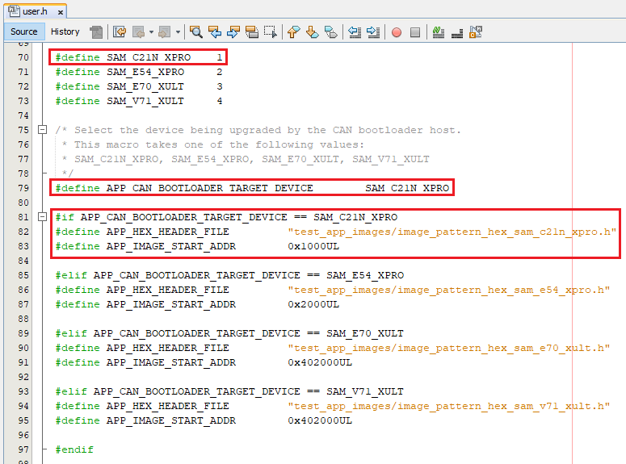

Configuring the NVM Host applications
Downloading and building the application
To clone or download this application from Github,go to the main page of this repository and then click Clone button to clone this repo or download as zip file. This content can also be download using content manager by following these instructions
Path of the NVM host applications within the repository are
- apps/can_bootloader/
- apps/can_fail_safe_bootloader/
Generating Hex Image pattern used by NVM Host application
Follow below steps only when existing test_app is rebuilt or any other application is to be bootloaded
- Open the application project to be bootloaded in the IDE
- If existing test application has to be built open test_app/firmware/*.X
-
Build the application project to generate the binary (Do not program the binary)
- Convert the generated binary (.bin file) to a header file containing the image data in a C style array:
-
On a Windows machine, open the command prompt and launch the btl_bin_to_c_array.py utility to generate a header file containing the image data in an array
python <harmony3_path>/bootloader/tools/btl_bin_to_c_array.py -b <binary_file> -o <hex_file> -d <device> -
Refer to btl_bin_to_c_array utility for converting the binary to C array in hex format

-
-
Add the application hex header file generated in above step to the test app images path of the CAN embedded host application host_app_nvm/firmware/src/test_app_images/
- Example:
- If the application hex header file generated is for sam_c21n_xpro.X project, Name it as image_pattern_hex_sam_c21n_xpro.h and place it in above path
- Example:
Configuring the NVM Host application
Follow below steps only when Host development kit is different than Target Development Kit
-
Open the host_app_nvm/firmware/*.X project in MPLABX IDE
-
Open the “user.h” file as shown below:

-
In the “user.h” file specify the Bootloader Target Device used using the predefined macros #define APP_CAN_BOOTLOADER_TARGET_DEVICE SAM_C21N_XPRO

-
Navigate to the #if block for the specified Bootloader Target Device and verify the below settings are as expected.
- APP_HEX_HEADER_FILE: Relative path to the generated header file containing the application hex image in an array
- APP_IMAGE_START_ADDR: User application start address (This value should be same as the application start address specified in Application Configurations steps).
- If the bootloader itself is being upgraded then the APP_IMAGE_START_ADDR must be set to 0x00 (start of bootloader)
- Ensure that the bootloader and application are also configured with the same value of user application start address